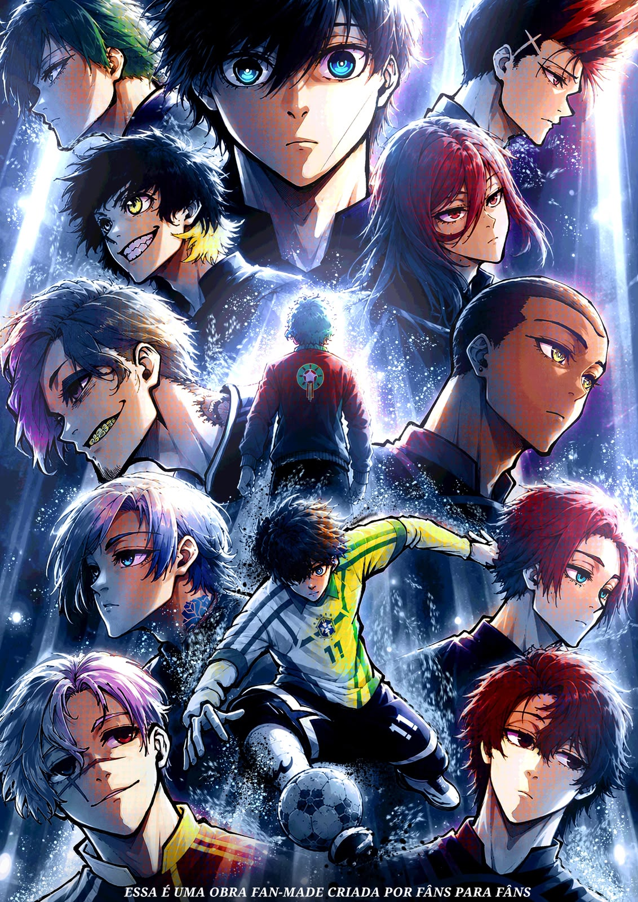
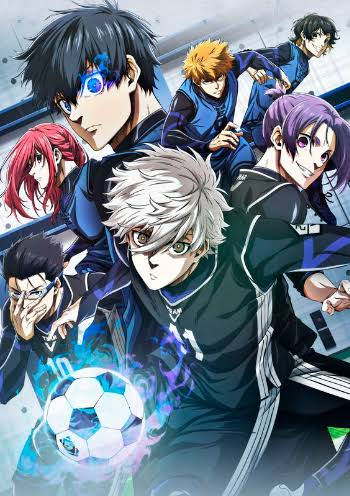

Blue Lock:
World Challenge
Um spin-off fan-made brasileiro que se passa dentro
do universo de Blue Lock, reunindo personagens conhecidos
e novos rostos em uma história alternativa, com partidas
intensas e muita competição.
🇧🇷 Feito por fãs, como homenagem à obra original.

Últimas atualizações 1

Capítulo 01 — Título do capítulo Lançado agora ▶Capítulos 3
Sobre a obra
Sinopse
Blue Lock: World Challenge é um spin-off fan-made que parte do universo criado por Muneyuki Kaneshiro e Yusuke Nomura para contar uma história alternativa, com novos confrontos, novas seleções e personagens que os leitores já conhecem.
O projeto nasceu do desejo de reunir leitores brasileiros em torno de uma história feita por fãs, com capítulos publicados gratuitamente e traduções em três idiomas.
Informações
- Tipo
- Mangá fan-made
- Status
- Em andamento
- Idiomas
- Português · English · Español
- Gêneros
AVISO IMPORTANTE
Projeto fan-made
não oficial.
Blue Lock: World Challenge é um projeto independente, não oficial e desenvolvido por fãs, criado como uma homenagem ao universo de Blue Lock.
O projeto não possui vínculo, afiliação, patrocínio ou autorização dos autores, editoras ou demais detentores dos direitos da obra original.
Todos os direitos relacionados a Blue Lock, seus personagens e elementos pertencentes à obra original permanecem de seus respectivos detentores.
O World Challenge não tem a intenção de se apresentar como uma produção oficial ou reivindicar propriedade sobre elementos pertencentes a terceiros.